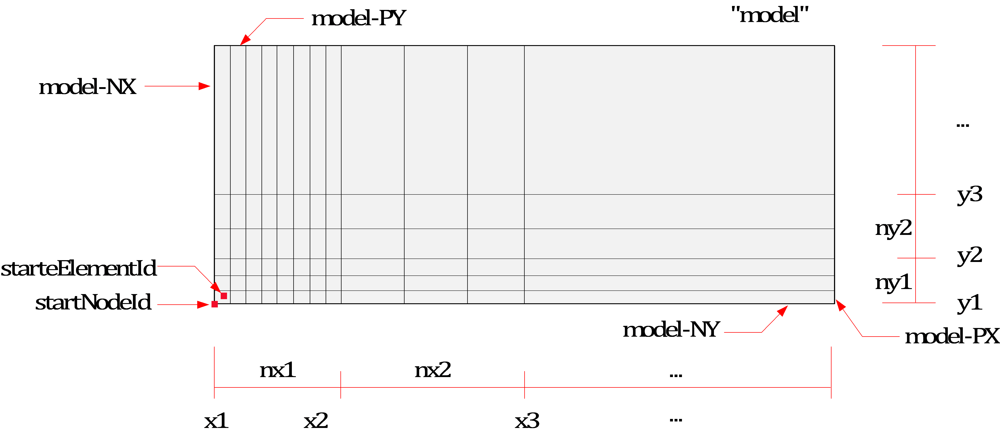
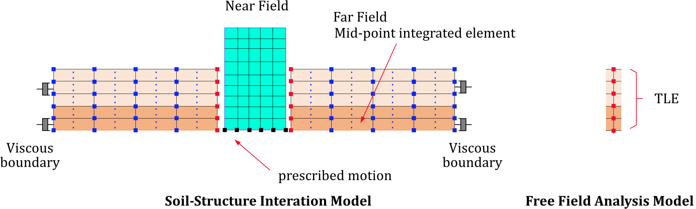

15. 모델링 편의
*Include
*INCLUDE는 외부 텍스트 파일을 삽입하는 명령이다. 입력파일이 복잡해 질 경우 적절히 사용된다.
*Include, File=file, [P=parameters]
Keyword line
- File=file: file name
- parameters: parameter expression. 이중따옴표(")로 둘러쌓여야 함. 생략 가능함.
Example
*INCLUDE, File=concrete.inp
*INCLUDE, File=model.inp, P="<S>=100. <T>=15.3, <Solver>={A,10}"
*DefaultParameter
파라미터 표현 사용시, 파라미터가 지정되지 않는 경우 사용되는 디폴트 파라미터 표현식을 지정
*DefaultParameter, parameters
Keyword line
- parameters: parameter expression. 이중따옴표(")로 둘러쌓여야 함.
파라미터 표현식은 hfAnalyzer를 커맨트라인에 실행하거나 *Include 문에서 지정하여 사용가능하다. 지정하지 않는 파라미터 표현식에 대한 디폴트 표현식을 지정한다. 예를 들어 아래와 같은 입력파일이 있다고 가정한다.
model.inp
*DefaultParameter, "<E>=2E9, <nu>=0.18"
*Material, TYPE=IsoElasticity, Name=myMat
<E>, <nu>
...
만약 명령행에서 다음과 같이 실행했다고 가정할 때는 다음과 같이 인식된다.
> hfAnalzyer model.inp
→ <E>와 <nu>가 DefaultParamter에서 지정한 2E9, 0.18로 각각 치환된다.
> hfAnalzyer model.inp –p "<E>=5E9"
→ <E>를 상위에서 지정하고 있으므로 그 값(5E9)를 사용하고 DefaultParamter 구문에서 지정한 값 <E> 값은 무시된다. 하지만 <nu>는 0.18을 적용한다.
만약 *Include, File=model.inp, P="<E>=5E9"" 등과 같이 사용하더로 위와 같은 개념으로 적용할 수 있다.
▪ 주의
*DefaultParameter 구문은 파일내에서 여러번 사용할 수 있으나 그 파일 전체에 대해 적용된다. 즉, 파일의 뒤쪽에서 지정하더라도 그 파일의 처음에 정의한 것과 같다.
*Distribution
절점 또는 요소에 지정하는 특성치를 부과
*Distribution, Type=type
target, ...
...
Keyword line
-
Type=type: type of distribution (required)
- Section: 요소에 단면을 지정 또는 해제
- BeamCS: 보요소에 ECS를 지정 또는 해제
- BeamEndRelease: 보요소에 moment end release를 지정 또는 해제
- TendonHostElset: 텐던 요소의 부모요소집합 지정 또는 해제
- ShellThicknessByProjection: 투영을 통해 쉘 요소의 절점당 두께를 지정하거나 해제
- MCKElementScaleFactor:: Spring/EarthSpring/PointMass 요소에 ScaleFactor를 지정하거나 해제
- MCKElementCS: Spring/EarthSpring/PointMass 요소에 요소좌표계를 지정하거나 해제
- MovingSpringInitialPosition: 이동스프링의 초기위치를 지정 또는 해제
*Distribution, Type=Section
요소의 단면 물성치를 지정하거나 해제
*Distribution, TYPE=Section
target1,target2,..., section
...
First dataline and subsequent datalines
- target1,target2,...: 단면 물성치를 지정할 요소번호, 요소집합, 또는 요소번호패턴(required). 요소번호패턴은
start:end:spacing형태이고,spacing은 1인 경우 생략가능. - section: Section name(required)
요소에 단면물성은 *Element에서 지정가능하지만, 생략할 경우 *Distribution, TYPE=Section으로 지정가능하다. 이 명령으로 이미 지정된 단면을 삭제하는 것도 가능하다.
프로그램에서는 라인내에서 2개 이상의 토큰이 있는 경우 먼저 제일 뒤에 제시된 토큰이 section인지를 검토하고 그렇지 않은 경우에는 주어진 section이 없는 것으로 인식한다. section이 없는 경우 대상 요소에 이미 지정되어 있는 section이 해제된다. 단면을 삭제하고자 하는 요소집합과 단면 명칭이 동일한 경우 한 라인에 요소집합만을 기입하도록 한다.
요소번호패턴으로 대상을 지정하는 경우 존재하지 않는 요소는 오류를 유발하지 않고 단순히 무시한다.
Example
*Distribution, TYPE=Section
left, section1 # 요소집합 "left"에 단면 "section1"를 지정
right, middle, section2 # 요소집합 "right", “middle”에 단면 "section2"를 지정
1,2,3,4, section3 # 요소 1,2,3,4 단면 “section3” 지정
2:10 # 2~10 요소에 대해 이미 지정된 단면 지정을 삭제
*Distribution, Type=BeamCS
3차원 보 요소의 ECS를 지정하거나 해제
*Distribution, Type=BeamCS
target1,target2, ..., beamcs
...
First dataline and subsequent datalines
- target1,target2, ...: 요소좌표계를 적용할 요소번호, 요소집합, 또는 요소번호패턴(required). 요소번호패턴은
start:end:spacing형태이고,spacing은 1인 경우 생략가능. 3차원 보 요소일때만 유효함. - beamcs: 보의 ECS (optional)
대상 요소가 3차원 보요소일 때만 유효하다. 프로그램에서는 라인내에서 2개 이상의 토큰이 있는 경우 먼저 제일 뒤에 제시된 토큰이 BeamCS인지를 검토하고 그렇지 않은 경우에는 주어진 beamcs이 없는 것으로 인식한다. beamcs가 없는 경우 대상 요소에 이미 지정되어 있는 beamcs이 해제된다. BeamCS를 삭제하고자 하는 요소집합과 BeamCS 명칭이 동일한 경우 한 라인에 요소집합만을 기입하도록 한다.
요소번호패턴으로 대상을 지정하는 경우 존재하지 않는 요소는 오류를 유발하지 않고 단순히 무시한다.
Example
*CoordinateSystem, Type=BeamCS, Name=beamcs
90
*Distribution, Type=BeamCS
1, 2, 3, beamcs
beamSet, beamcs
beamSet2, beamSet3, beamcs
beamset1, 1:10 # 해제
*Distribution, Type=BeamEndRelease
보요소의 end-release를 보 요소에 지정하거나 해제
*Distribution, Type=BeamEndRelease
target1,target2, ..., releaseCode
...
First dataline and subsequent datalines
- target1,target2, ...: 양단에 end-release 조건을 적용할 요소번호, 요소집합, 또는 요소번호패턴(required). 요소번호패턴은
start:end:spacing형태이고,spacing은 1인 경우 생략가능. 보요소일때만 유효함. - releaseCode: 보의 요소의 end release code(optional). Rx1, Ry1, Rz1, Rx2, Ry2, Rz2의 조합. 예를 들어 Rz1|Rz2.
대상 요소가 2차원 보요소일 경우 Rz1, Rz2만 유효하다. releaseCode를 쓰지 않는 경우 미리지정되어 있는 end release code가 해제된다.
요소번호패턴으로 대상을 지정하는 경우 존재하지 않는 요소는 오류를 유발하지 않고 단순히 무시한다.
Example
*Distribution, Type=BeamEndRelease
1, 2, 3, Rz1|Rz2
beamSet, Rx1|Ry1|Rz1
1:10 # 1-10 요소의 모든 릴리즈코드가 해제
*Distribution, Type=TendonHostElset
Tendon 요소의 부모요소집합을 지정하거나 해제
*Distribution, Type=TendonHostElset
target1,target2, ..., host
...
First dataline and subsequent datalines
- target: 부모요소를 적용할 요소번호, 요소집합, 또는 요소번호패턴(required). 요소번호패턴은
start:end:spacing형태이고,spacing은 1인 경우 생략가능. Tendon 요소만 유효함. - host: Host elset(option).
호스트요소집합(host)이 주어지지 않는 경우, 지정된 요소에서 호스트를 해제한다. 프로그램에서는 라인내에서 2개 이상의 토큰이 있는 경우 먼저 제일 뒤에 제시된 토큰이 host인지를 검토하고(즉, embeded line 요소 여부에 따라) 그렇지 않은 경우에는 주어진 host가 없는 것으로 인식한다. Host가 없는 경우 대상 요소에 이미 지정되어 있는 section이 해제된다.
요소번호패턴으로 대상을 지정하는 경우 존재하지 않는 요소는 오류를 유발하지 않고 단순히 무시한다.
Example
*Distribution, Type=TendonHostElset
1,2,3, girder
tendonSet, crossbeam
tendonSet1,tendonSet2, mainGirder
tendonSet # 해제
*Distribution, Type=ShellThicknessByProjection
투영을 통해 쉘 절점 두께를 지정
*Distribution, Type=ShellThicknessByProjection, Shape=Rectangle
target, n1,n2,n3, h1,h2,h3
target, n1,n2,n3,n4, h1,h2,h3,h4
...
First dataline and subsequent datalines
- target: 쉘 절점 두께를 투영 방법으로 적용할 절점, 절점집합, 또는 절점번호패턴(required). 절점번호패턴은 start
 spacing 형태이고, spacing은 1인 경우 생략가능.
spacing 형태이고, spacing은 1인 경우 생략가능. - n1,n2,n3: 3점으로 구성된 Projection plane을 구성하는 절점(required)
- h1,h2,h3: 3점으로 구성된 Projection plane의 nodal thickness(required).
- n1,n2,n3,n4: 4점으로 구성된 Projection plane을 구성하는 절점(required)
- h1,h2,h3,h4: 4점으로 구성된 Projection plane의 nodal thickness(required).
생성된 쉘 절점 두께는 *NProp, TYPE=ShellThickness로 변환되어 기록된다. Projection plane을 구성하는 4개의 절점은 동일 평면상에 존재해야 한다. 만약 동일 평면상에 존재하지 않는 warped geometry를 갖는 경우 4개 절점의 중심에서 정의되는 평면으로 projection 된다. 따라서 warped geometry를 갖는 경우 약간의 오차가 발생할 수 있다.
Example
*Distribution, Type=ShellThicknessByProjection
slab1, 1,100,105, 0.1,0.2,0.3
slab2, 1,100,105,107, 0.1,0.2,0.3,0.4
1:200:5, 1,100,105,107, 0.1,0.2,0.3,0.4
*Distribution, Type=MCKElementScaleFactor
Spring/EarthSpring/PointMass 요소에 ScaleFactor를 지정하거나 해제
*Distribution, Type=MCKElementScaleFactor
target1,target2, ..., sf
...
First dataline and subsequent datalines
- target1,target2, ...: ScaleFactor를 적용할 요소번호, 요소집합, 또는 요소번호패턴(required). 요소번호패턴은
start:end:spacing형태이고,spacing은 1인 경우 생략가능. Spring, EarthSpring, PointMass 요소일때만 유효함. - sf: scale factor
Spring, EarthSpring, PointMass에서 추가적인 scale factor를 지정한다. 대상 요소가 존재하지 않거나 Spring, EarthSpring, PointMass 요소가 아닌 경우 오류를 유발하지 않고 단순히 무시한다.
Example
*Distribution, Type=MCKElementScaleFactor
1, 2, 3, 2.5 # 1,2,3 요소에 scale factor 2.5
wall, 2.5 # wall 요소집합(모두 spring 요소로 구성되어야)에 대해 scale factor 2.5 지정
*Distribution, Type=MCKElementCS
Spring/EarthSpring/PointMass 요소에 요소좌표계를 지정하거나 해제
*Distribution, Type=MCKElementCS
target1,target2, ..., ucs
...
First dataline and subsequent datalines
- target1,target2, ...: ECS를 적용할 요소번호, 요소집합, 또는 요소번호패턴(required). 요소번호패턴은
start:end:spacing형태이고,spacing은 1인 경우 생략가능. Spring, EarthSpring, PointMass 요소일때만 유효함. - ucs: 스프링 요소에 사용될 UCS(optional)
대상 요소가 Spring, EarthSparing, PointMass인 경우만 유효하다. 프로그램에서는 라인내에서 2개 이상의 토큰이 있는 경우 먼저 제일 뒤에 제시된 토큰이 CS인지를 검토하고 그렇지 않은 경우에는 주어진 cs이 없는 것으로 인식한다. cs가 없는 경우 대상 요소에 이미 지정되어 있는 cs이 해제된다. CS를 삭제하고자 하는 요소집합과 CS 명칭이 동일한 경우 한 라인에 요소집합만을 기입하도록 한다. 대상 요소가 존재하지 않거나 Spring, EarthSpring, PointMass 요소가 아닌 경우 오류를 유발하지 않고 단순히 무시한다.
Example
*CoordinateSystem, Type=UCS, Name=springCS
1, 1, 0, 0, 1, 0
*Distribution, Type=MCKElementCS
1, 2, 3, springCS
springSet, springCS
springSet2, springSet3, springCS
springSet # 해제
*Distribution, Type=MovingSpringInitialPosition
이동스프링의 초기위치를 지정하가나 해제
*Distribution, Type=MovingSpringIntialPosition
target, x, y
...
First dataline and subsequent datalines
- target: 이동스프링의 초기위치를 지정할 요소번호, 요소집합, 또는 요소번호패턴(required). 요소번호패턴은
start:end:spacing형태이고,spacing은 1인 경우 생략가능. MovingSpring 요소일때만 유효함. - P=x,y: 초기 위치(optional, default 0,0), 보요소를 대상으로하는 이동스프링은 x값만 참조
이동스프링요소(*Element, Type=MovingSpring)는 초기위치를 지정한다(지정하지 않으면 0,0). 대상 요소가 존재하지 않거나 MovingSpring 요소가 아닌 경우 오류를 유발하지 않고 단순히 무시한다.
Example
*Distribution, Type=MovingSpringIntialPosition
100, -5, 0. # 100번 요소에 (-5,0) 적용
*Model
미리 정의된 템플릿 모델을 생성
*Model, Type=type
...
Keyword line
-
Type=type: type of model (required)
- Block2D: 2차원 솔리드 요소로 직사각형 메쉬를 생성
- Block3D: 3차원 솔리드 요소로 직육면체 메쉬를 생성
- Cylinder: 3차원 솔리드 요소로 원통 메쉬를 생성
- Wall: 쉘 요소로 직사각 메쉬를 생성
- RectangularTank: 쉘 요소로 직사각 탱크 메쉬를 생성
- CylindericalTank: 쉘 요소로 원통 탱크 메쉬를 생성
- FarField2D: SSI 해석을 위한 2차원 메쉬 생성과 자유장해석 수행후 그 결과를 유효하중으로 생성
- FarField3D: SSI 해석을 위한 3차원 메쉬 생성과 자유장해석 수행후 그 결과를 유효하중으로 생성
*Model, Type=Block2D
2차원 솔리드 요소로 직사각형 메쉬를 생성
*Model, Type=Block2D
name, startNodeId, startElementId, elementType, section
x1, x2, ..., x{n+1}, nx1, nx2, ..., nx{n}
y1, y2, ..., y{n+1}, ny1, ny2, ..., ny{n}
ix1, iy1, ...
First dataline
- name: 대표 이름. 이 명령을 통해 생성하는 절점집합, 요소집합, 면, 하중 등의 이름의 기초로 사용
- startNodeId, startElementId: 시작 절점 및 요소 번호. Auto이면 자동 계산
- elementType: 적용 요소 타입, CPS4, AC2D4 등과 같은 2차원 사각형 솔리드요소의 타입
- section: 적용 단면(optional, 없으면 요소에 단면을 적용하지 않음)
Second and third datalines
- x1, x2, ..., x{n+1}, nx1, nx2, ..., nx{n}: x 범위와 요소 개수
- y1, y2, ..., y{n+1}, ny1, ny2, ..., ny{n}: y 범위와 요소 개수
fourth dataline(optional)
- ix, iy, ...: 삭제할 블록 번호 (ix, iy)
절점, 요소 외에 절점집합, 요소집합, 면 등의 엔터티를 생성한다.
- 절점집합 : name (모든 절점)
- 요소집합 : name (모든 요소)
- 면 : name (모든 외곽 면), name-NX (X=xmin인 표면), name-PX (X=xmax인 표면), name-NY (Y=ymin인 표면), name-PX (Y=ymax인 면). - 삭제하는 블록이 있는 경우 name-i-j-PX, name-i-j-NX, name-i-j-PY, name-i-j-NY 등과 같이 삭제영역과 인접한 면을 생성한다. 이때 i,j 는 삭제하는 영역의 번호이다.

Fig. 15.5-1. Block2D mesh generation
Example
*Material, Type=IsoElasticity, Name=steel
2E6, 0.2
*Section, Type=Solid, Name=solid
steel, 0.1
*Model, TYPE=Block2D
Cant, 1, 1, CPS4, solid # 모든 요소에 solid 단면 적용
0, 20, 10
0, 4, 4
*Model, TYPE=Block2D
CantX, Auto, Auto, CPS4 # 단면 없이 요소 생성
0, 20, 10
0, 4, 4
*Model, Type=Block3D
3차원 솔리드 요소로 직육면체 메쉬를 생성
*Model, Type=Block3D
name, startNodeId, startElementId, elementType, section
x1, x2, ..., x{n+1}, nx1, nx2, ..., nx{n}
y1, y2, ..., y{n+1}, ny1, ny2, ..., ny{n}
z1, z2, ..., z{n+1}, nz1, nz2, ..., nz{n}
ix, iy, iz, ...
First dataline
- name: 대표 이름. 이 명령을 통해 생성하는 절점집합, 요소집합, 면, 하중 등의 이름의 기초로 사용
- startNodeId, startElementId: 시작 절점 및 요소 번호. Auto이면 자동 계산
- elementType: 적용 요소 타입, C3D8, AC3D8 등과 같은 3차원 육면체 솔리드요소의 타입
- section: 적용 단면(optional, 없으면 요소에 단면을 적용하지 않음)
Second, third and fourth datalines
- x1, x2, ..., x{n+1}, nx1, nx2, ..., nx{n}: x 범위와 요소 개수
- y1, y2, ..., y{n+1}, ny1, ny2, ..., ny{n}: y 범위와 요소 개수
- z1, z2, ..., z{n+1}, nz1, nz2, ..., nz{n}: z 범위와 요소 개수
First dataline
- ix, iy, iz, ...: 삭제할 블록 번호 (ix, iy, iz)
절점, 요소 외에 절점집합, 요소집합, 면 등의 엔터티를 생성한다.
- 절점집합 : name (모든 절점)
- 요소집합 : name (모든 요소)
- 면 : name (모든 외곽 면), name-NX (X=-xmin인 표면), name-PX (X=xmax인 표면), name-NY (Y=ymin인 표면), name-PX (Y=ymax인 면), name-NZ (Z=zmin인 표면), name-PZ (Z=zmax인 표면). 삭제하는 블록이 있는 경우 name-i-j-k-PX, name-i-j—k-NX, name-i-j-k-PY, name-i-j-k-NY, name-i-j-k-NZ, name-i-j-k-PZ 등과 같이 삭제영역과 인접한 면을 생성한다. 이때 i,j 는 삭제하는 영역의 번호이다.

Fig. 15.5-2. Block3D mesh generation
Example
*Material, Type=IsoElasticity, Name=steel
2E6, 0.2
*Section, Type=Solid, Name=solid
steel, 1
*Model, TYPE=Block3D
Cant, 1, 1, C3D8, solid # 모든 요소에 solid 단면 적용
0, 20, 10
0, 4, 4
0, 2, 2
*Model, TYPE=Block3D
Cant, Auto, Auto, C3D8 # 단면 없이 요소 생성
0, 20, 10
0, 4, 4
0, 2, 2
*Model, Type=Cylinder
실린더 메쉬를 생성
*Model, Type=Cylinder
name, startNodeId, startElementId, elementType, section
x0, y0, z0, R, nseg
h1, h2, ..., h{n}, nh1, nh2, ... nh{n}
First dataline
- name: 대표 이름. 이 명령을 통해 생성하는 절점집합, 요소집합, 면, 하중 등의 이름의 기초로 사용
- startNodeId, startElementId : 시작 절점 및 요소 번호. Auto이면 자동 계산
- elementType: 적용 요소 타입, C3D8, AC3D8 등과 같은 3차원 육면체 솔리드요소의 타입
- section: 적용 단면(optional, 없으면 요소에 단면을 적용하지 않음)
Second dataline
- x0, x0, z0: 원점
- R__: xy 평면상의 반경
- nseg__: No. of segments in the perimeter of quarter outer circle. If nseg is less than 4, 4 is used. (optioanl, default 0)
Third dataline
- h1, h2, ... h{n}, nh1, nh2, ..., nh: 높이방향(z방향) 높이 및 요소 개수
절점, 요소 외에 절점집합, 요소집합, 면 등의 엔터티를 생성한다.
- 절점집합 : name (모든 절점)
- 요소집합 : name (모든 요소)
- 면 : name (모든 외곽 면), name-Top(상부 표면), name-Bottom(하부 표면), name-Side(측면)
Example
*Material, Type=Acoustic, Name=Water
2190.4E+6, 1000 # bulkModulus, density ... compressible
*Section, Type=Solid, Name=Water
Water, 1 # thickness
*Model, TYPE=Cylinder
Water, auto, auto, AC3D8, Water
0,0,0,18.3,4 # x0, y0, z0, R, nseg
12.2,5 # h1,...,nh1,...
*Model, Type=Wall
쉘 요소로 직사각형 메쉬를 생성
*Model, Type=Wall
name, startNodeId, startElementId, elementType, section
ox, oy, oz, x1, x2, x3, y1, y2, y3
lxmin, lxmax, nlx
lymin, lymax, nly
First dataline
- name: 대표 이름. 이 명령을 통해 생성하는 절점집합, 요소집합, 면, 하중 등의 이름의 기초로 사용
- startNodeId, startElementId: 시작 절점 및 요소 번호. Auto이면 자동 계산
- elementType: 적용 요소 타입, 4절점 쉘 요소(S4, S4F 등) 또는 8절점 솔리드쉘(CS8)
- section: 적용 단면(optional, 없으면 요소에 단면을 적용하지 않음)
Second dataline
- ox, oy, oz: 국부 좌표계의 기준점
- x1, x2, x3: 국부좌표계의 x축을 정의
- y1, y2, y3: 국부좌표계의 평면을 정의하는 또 다른 벡터. z = xy, y = zx로 y축 생성
Third and fourth datalines
- lx1min, lxmax, nlx: 국부좌표계상의 1번축(국부 x) 범위와 요소 개수
- lymin, lymax, nly: 국부좌표계상의 2번축(국부 y) 범위와 요소 개수
절점, 요소 외에 절점집합, 요소집합 등의 엔터티를 생성한다.
- 절점집합 : name (모든 절점)
- 요소집합 : name (모든 요소)
CS8 요소를 적용하면 쉘 두께를 기준으로 1개 층의 솔리드쉘을 만든다. 만약 쉘 단면이 주어지지 않으면 두께는 1을 적용한다.
Example
*Material, Type=IsoElasticity, Name=steel
2E6, 0.2
*Section, Type=Shell, Name=beam
steel, 0.1
*Model, Type=Wall
beam, Auto, Auto, S4, beam
0, 0, 0, 1, 0, 0, 0, 1, 0
0, 20, 20
0, 4, 4
*Model, Type=RectangularTank
쉘 요소로 상면이 비어 있는 직사각 탱크 메쉬를 생성
*Model, Type=RectangularTank
name, startNodeId, startElementId, elementType, wallSection, bottomSection
x1, x2, ..., x{n+1}, nx1, nx2, ..., nx{n}
y1, y2, ..., y{n+1}, ny1, ny2, ..., ny{n}
z1, z2, ..., z{n+1}, nz1, nz2, ..., nz{n}
First dataline
- name: 대표 이름. 이 명령을 통해 생성하는 절점집합, 요소집합, 면, 하중 등의 이름의 기초로 사용
- startNodeId, startElementId: 시작 절점 및 요소 번호. Auto이면 자동 계산
- elementType: 적용 요소 타입, S4F와 같은 사각형 쉘요소 타입
- wallSection, bottomSection: 벽체와 바닥면의 단면(optional, 없으면 요소에 단면을 적용하지 않음)
Second, third and fourth datalines
- x1, x2, ..., x{n+1}, nx1, nx2, ..., nx{n}: x 범위와 요소 개수
- y1, y2, ..., y{n+1}, ny1, ny2, ..., ny{n}: y 범위와 요소 개수
- z1, z2, ..., z{n+1}, nz1, nz2, ..., nz{n}: z 범위와 요소 개수
절점, 요소 외에 절점집합, 요소집합, 면 등의 엔터티를 생성한다.
- 절점집합 : name (모든 절점)
- 요소집합 : name (모든 요소)
- 면 : name (모든 외곽 면), name-NX (X=-xmin인 표면), name-PX (X=xmax인 표면), name-NY (Y=ymin인 표면), name-PX (Y=ymax인 면), name-Bottom (Z=zmin인 표면)

Fig. 15.5-3. RectangularTank mesh generation
Example
*Material,Type=IsoElasticity,Name=mat
30E9, 0.18, 0, 2000. # E, nu, alpha, density
*Section, Type=Shell, Name=shell
mat, 0.01 # h
*Model, TYPE=RectangularTank
Cant, 1, 1, S4F, shell, shell
0, 20, 10
0, 4, 4
0, 2, 2
*Model, TYPE=RectangularTank
CantX, Auto, Auto, S4F # 단면 없이 요소 생성
0, 20, 10
0, 4, 4
0, 2, 2
*Model, Type=CylindericalTank
쉘 요소로 상면이 비어 있는 실린더 탱크 메쉬를 생성
*Model, Type=CylindericalTank
name, startNodeId, startElementId, elementType, wallSection, bottomSection
x0, y0, z0, R, nseg
h1, h2, ..., h{n}, nh1, nh2, ... nh{n}
First dataline
- name: 대표 이름. 이 명령을 통해 생성하는 절점집합, 요소집합, 면, 하중 등의 이름의 기초로 사용
- startNodeId, startElementId : 시작 절점 및 요소 번호. Auto이면 자동 계산
- elementType: 적용 요소 타입, S4F와 같은 사각형 쉘요소 타입
- wallSection, bottomSection: 벽체와 바닥면의 단면(optional, 없으면 요소에 단면을 적용하지 않음)
Second dataline
- x0, x0, z0: 원점
- R__: xy 평면상의 반경
- nseg__: No. of segments in the perimeter of quarter outer circle. If nseg is less than 4, 4 is used. (optioanl, default 0)
Third dataline
- h1, h2, ... h{n}, nh1, nh2, ..., nh: 높이방향(z방향) 높이 및 요소 개수
절점, 요소 외에 절점집합, 요소집합, 면 등의 엔터티를 생성한다.
- 절점집합 : name (모든 절점)
- 요소집합 : name (모든 요소)
- 면 : name (모든 외곽 면), name-Bottom(하부 표면), name-Side(측면)
Example
*Material, Type=IsoElasticity, Name=Tank
2.0776E+10, 0.17, 0, 2300 # E(MPa), nu, alpha, density
*Section, Type=Shell, Name=Tank
Tank, 1.2
*Model, TYPE=CylindericalTank
Tank, auto, auto, S4F, Tank, Tank
0,0,0,18.3,4 # x0, y0, z0, R, nseg
12.2,1.8,5,2 # h1,...,nh1,...
*Model, TYPE=FarField2D
SSI 해석을 위한 2차원 메쉬 생성, 자유장해석, 유효하중 계산 등을 수행
*Model, TYPE=FarField2D
name, startNodeId, startElementId, outputFormat
acceleration, iz, Direct|Outcrop, rcx, x0
nearMinX, nearMaxX, nearMeshCountX, farMeshSizeX, farMeshCountX
ytop
E1, nu1, density1, xi1, h1, ny1
E2, nu2, density2, xi2, h2, ny2
...
En, nun, densityn, xin, hn, nyn
{bottomNSet} | {EHalf, nuHalf, densityHalf, xiHalf, farMeshSizeY, farMeshCountY}
First dataline
- name: 대표 이름. 이 명령을 통해 생성하는 절점집합, 요소집합, 면, 하중 등의 이름의 기초로 사용
- startNodeId, startElementId: 시작 절점 및 요소 번호. Auto이면 자동 계산
- outputFormat: 유효하중과 바닥면 운동에 대한 출력 시간이력 파일 포맷. auto, csv, npy 중 하나. csv는 csv로만, npy는 npy로만 출력. auto 이면 생성되는 함수 파일에서 열의 개수가 16,364 이하이면 csv 파일로 그 이상이면 npy 파일로 출력. 디폴트는 auto.
Second dataline
- acceleration: 가속도 시각 이력 함수. TimeSeries 함수이어야 하고, 2개의 성분을 가져야 함. 세 성분은 순차적으로 X, Y 방향의 가속도 성분.
- iz, Direct|Outcrop: 시간이력이 가력되는 지층경계면 번호(1-based)와 입력방식(Direct 이면 iz 위치에 가속도입력이 주어진 것으로 취급하고, Outcrop이면 outcrop motion으로 취급). iz는 ‘(지층개수)+1’까지 지정할 수 있음. 다만 기반면 조건이 강체인 경우(Rigid)이고, Outcrop으로 지정하는 경우에는 (지층개수)까지 지정가능(Outcrop으로 지정하기 위해서는 그 하부에 지층 정보가 있어야 함)
- rcx: 입사 지진파의 수평 방향 겉보기 속도의 역수. rcx = 1/cx이고, cx=cp/lx=cs/mx 등으로 계산됨. 여기에서 cp, cs는 P파와 S파의 속도, (lx, ly, lz)는 P파, (mx, my, mz)는 S파의 단위 방향 벡터. cx 대신 rcx를 사용한 이유는 수직 입사파인 경우 direct cosine lx, mx가 0이기 때문
- x0: 입사 지진파의 기준점.
Third dataline
- nearMinX, nearMaxX, nearMeshCountX, farMeshSizeX, farMeshCountX: X방향 근역의 범위와 메쉬 개수, 원역 메쉬 크기 및 개수
Fourth dataline
- ytop: 지상면의 위치
- f0: 기준 주파수(Hz). 유효하중 계산시 stiffness-proportional damping으로 근사할 때 적용(단층 지반일 경우 첫 번째 고유진동수는 vs/4H, 다층 지반이면 등가속력 vse=sum(Hi)/sum(Hi/Vsi)를 계산한후 vse/4H에 적용, 감쇠비는 재료감쇠비 5% 적용)
Fifth dataline and subsequent datalines
- E1, nu1, density1, xi1, h1, nz1: 지상으로부터 첫 번째 층상 지반의 물성치와 높이
- E2, nu2, density2, xi2, h2, nz2: 지상으로부터 두 번째 층상 지반의 물성치와 높이 (optional)
- ...
- En, nun, densityn, xin, hn, nzn: 지상으로부터 n 번째 층상 지반의 물성치와 높이 (optional)
Last dataline
- bottomNset: Rigid 조건인 경우 기초면의 절점집합명
- EHalf, nuHalf, densityHalf, xiHalf, farMeshSizeY, farMeshCountY: Flexible인 경우 기반암의 물성치 및 y방향 원역의 메쉬 크기 및 개수.
기반면의 강성 고려 유무에 따라 Rigid 및 Flexible 조건을 부과할 수 있다. 무한영역을 처리하기 위해 SimplePMDL 정식화를 사용하는 CPE4PMDL 요소와 원역 바깥 경계에 점성경계가 설정된다. 절점, 요소 외에 기준이름으로 주어진 name과 bottomNset의 이름을 기준으로 다음을 생성한다.
- 재료: name-1, name-2, ... (레이어에 대응하는 재료), name-half (half space에 대응하는 재료)
- 단면: name-1, name-2, ... (레이어에 대응하는 단면), name-half (half space에 대응하는 단면)
- 요소집합: name (모든 요소), name-1, name-2, ...(레이어에 대응하는 요소), name-half (half space에 대응하는 요소)
- 표면 : name-Boundary (원역 외곽), name-NNX (X=nearXMin인 근역-원역 경계), name-NPX (X=nearXMax인 근역-원역 경계), name-NBottom (Flexible인 경우 하단부 근역-원역 경계)
- 구속조건 : name-Boundary (점성경계)
- 하중 : name-Effective (유효하중), bottomNset-Motion(Rigid한 경우 근역하면 움직임 하중)
- 함수 : name-Effective (유효하중에 사용되는 시간함수), bottomNset-Motion (Rigid한 경우 근역하면 절점의 움직임에 사용될 시간함수)
다음은 생성되는 시간이력 파일이다.
-name-Freefield.csv|npy : 자유장 해석 결과로 층 경계 응답을 상부로부터 변위, 속도, 가속도 시간이력을 출력. 참고용이며 해석에는 사용하지 않음. -name-Effective.csv|npy : 근역-원역 경계에 작용하는 유효하중에 대한 시간이력 파일 -bottomNset-Motion.csv|npy : Rigid 조건에서 prescribed motion을 저장하는 시간이력 파일
위에서

Fig. 15.5-4. Rigid case
Fig. 15.5-4. Rigid case

Fig. 15.5-5. Flexible case
Fig. 15.5-5. Flexible case

Fig. 15.5-6. Acceleration history input
Example
*Function, TYPE=TimeSignal, Name=acc
0.02, 4096
ELCchopra.dat, 1, 0.31*9.81
ELCchopra.dat, 1, 0.31*9.81
*Node, NSet=Bottom
1, -10, -30
2, 10, -30
3, 10, -30
4, -10, -30
*Model, TYPE=FarField2D
RigidBase2D, Auto, Auto
acc, 3, Direct, 1/200, 0 # acc, iz, Direct|Outcrop, rcx, x0
-10, 10, 1, 16, 10 # nearMinX, nearMaxX, nearMeshCountX, farMeshSizeX, farMeshCountX
0, 1. # ztop, f0
20E9,0.2, 2000, 0.02, 10, 5 # E, nu, density, xi, h, nz
25E9,0.2, 2000, 0.02, 20, 10 # E, nu, density, xi, h, nz
Bottom
*Model, TYPE=FarField2D
FlexibleBase2D, Auto, Auto
acc, 3, Outcrop, 1/200, 0 # acc, iz, Direct|Outcrop, rcx, x0
-10, 10, 1, 16, 10 # nearMinX, nearMaxX, nearMeshCountX, farMeshSizeX, farMeshCountX
0, 1. # ztop, f0
20E9,0.2, 2000, 0.02, 10, 5 # E, nu, density, xi, h, nz
25E9,0.2, 2000, 0.02, 20, 10 # E, nu, density, xi, h, nz
30E9, 0.2, 2000, 0.02, 16, 10 # E, nu, density, xi, farMeshSizeZ, farMeshCountZ
*Model, TYPE=FarField3D
SSI 해석을 위한 3차원 메쉬 생성, 자유장해석, 유효하중 계산 등을 수행
*Model, TYPE=FarField3D
name, startNodeId, startElementId, outputFormat
acceleration, iz, Direct|Outcrop, rcx, rcy, x0, y0
nearMinX, nearMaxX, nearMeshCountX, farMeshSizeX, farMeshCountX
nearMinY, nearMaxY, nearMeshCountY, farMeshSizeY, farMeshCountY
ztop
E1, nu1, density1, xi1, h1, nz1
E2, nu2, density2, xi2, h2, nz2
...
En, nun, densityn, xin, hn, nzn
{bottomNSet} | {EHalf, nuHalf, densityHalf, xiHalf, farMeshSizeZ, farMeshCountZ}
First dataline
- name: 대표 이름. 이 명령을 통해 생성하는 절점집합, 요소집합, 면, 하중 등의 이름의 기초로 사용
- startNodeId, startElementId: 시작 절점 및 요소 번호. Auto이면 자동 계산
- outputFormat: 유효하중과 바닥면 운동에 대한 출력 시간이력 파일 포맷. auto, csv, npy 중 하나. csv는 csv로만, npy는 npy로만 출력. auto 이면 생성되는 함수 파일에서 열의 개수가 16,364 이하이면 csv 파일로 그 이상이면 npy 파일로 출력. 디폴트는 auto.
Second dataline
- acceleration: 가속도 시각 이력 함수. TimeSeries 함수이어야 하고, 3개의 성분을 가져야 함. 세 성분은 순차적으로 X, Y, Z 방향의 가속도 성분.
- iz, Direct|Outcrop: 시간이력이 가력되는 지층경계면 번호(1-based)와 입력방식(Direct 이면 iz 위치에 가속도입력이 주어진 것으로 취급하고, Outcrop이면 outcrop motion으로 취급). iz는 ‘(지층개수)+1’까지 지정할 수 있음. 다만 기반면 조건이 강체인 경우(Rigid)이고, Outcrop으로 지정하는 경우에는 (지층개수)까지 지정가능(Outcrop으로 지정하기 위해서는 그 하부에 지층 정보가 있어야 함)
- rcx, rcy: 입사 지진파의 수평 방향 겉보기 속도의 역수. rcx=1/cx, rcy=1/cy이고, cx=cp/lx=cs/mx, cy=cp/ly=cs/my 등으로 계산됨. 여기에서 cp, cs는 P파와 S파의 속도, (lx, ly, lz)는 P파, (mx, my, mz)는 S파의 단위 방향 벡터. cx, cy 대신 rcx, rcy를 사용한 이유는 direct cosine lx, mx, ly, my가 0이 될 수 있기 때문임. 만약 rcx = rcy = 0으로 지정하면 수직입사 가정 적용
- x0, y0: 입사 지진파의 기준점.
Third dataline
- nearMinX, nearMaxX, nearMeshCountX, farMeshSizeX, farMeshCountX: X방향 근역의 범위와 메쉬 개수, 원역 메쉬 크기 및 개수
- nearMinY, nearMaxY, nearMeshCountY, farMeshSizeY, farMeshCountY: Y방향 근역의 범위와 메쉬 개수, 원역 메쉬 크기 및 개수
Fourth dataline
- ztop: 지상면의 위치
- f0: 기준 주파수(Hz). 유효하중 계산시 stiffness-proportional damping으로 근사할 때 적용(단층 지반일 경우 첫 번째 고유진동수는 vs/4H, 다층 지반이면 등가속력 vse=sum(Hi)/sum(Hi/Vsi)를 계산한후 vse/4H에 적용, 감쇠비는 재료감쇠비 5% 적용)
Fifth dataline and subsequent datalines
- E1, nu1, density1, xi1, h1, nz1: 지상으로부터 첫 번째 층상 지반의 물성치와 높이
- E2, nu2, density2, xi2, h2, nz2: 지상으로부터 두 번째 층상 지반의 물성치와 높이 (optional)
- ...
- En, nun, densityn, xin, hn, nzn: 지상으로부터 n 번째 층상 지반의 물성치와 높이 (optional)
Last dataline
- bottomNset: Rigid 조건인 경우 기초면의 절점집합명
- EHalf, nuHalf, densityHalf, xiHalf, farMeshSizeZ, farMeshCountZ: Flexible인 경우 기반암의 물성치 및 z방향 원역의 메쉬 크기 및 개수.
기반면의 강성 고려 유무에 따라 Rigid 및 Flexible 조건을 부과할 수 있다. 무한영역을 처리하기 위해 SimplePMDL 정식화를 사용하는 C3D8PMDL 요소와 원역 바깥 경계에 점성경계가 설정된다. 절점, 요소 외에 기준이름으로 주어진 name과 bottomNset의 이름을 기준으로 다음을 생성한다.
- 재료: name-1, name-2, ... (레이어에 대응하는 재료), name-half (half space에 대응하는 재료)
- 단면: name-1, name-2, ... (레이어에 대응하는 단면), name-half (half space에 대응하는 단면)
- 요소집합: name (모든 요소), name-1, name-2, ...(레이어에 대응하는 요소), name-half (half space에 대응하는 요소)
- 표면 : name-Boundary (원역 외곽), name-NNX (X=nearXMin인 근역-원역 경계), name-NPX (X=nearXMax인 근역-원역 경계), name-NNY (Y=nearYMin인 근역-원역 경계), name-NPY (Y=nearYMax인 근역-원역 경계), name-NBottom (Flexible인 경우 하단부 근역-원역 경계)
- 구속조건 : name-Boundary (점성경계)
- 하중 : name-Effective (유효하중), bottomNset-Motion(Rigid한 경우 근역하면 움직임 하중)
- 함수 : name-Effective (유효하중에 사용되는 시간함수), bottomNset-Motion (Rigid한 경우 근역하면 절점의 움직임에 사용될 시간함수)
다음은 생성되는 시간이력 파일이다.
-name-Freefield.csv|npy : 자유장 해석 결과로 층 경계 응답을 상부로부터 변위, 속도, 가속도 시간이력을 출력. 참고용이며 해석에는 사용하지 않음. -name-Effective.csv|npy : 근역-원역 경계에 작용하는 유효하중에 대한 시간이력 파일 -bottomNset-Motion.csv|npy : Rigid 조건에서 prescribed motion을 저장하는 시간이력 파일
위에서
Example
*Function, TYPE=TimeSignal, Name=acc
0.02, 1024
ELCchopra.dat, 1, 0.31*9.81
ELCchopra.dat, 1, 0.31*9.81
ELCchopra.dat, 1, 0.31*9.81
*Node, NSet=Bottom
1, -10, -20, -30
2, 10, -20, -30
3, 10, 20, -30
4, -10, 20, -30
*Model, TYPE=FarField3D
RigidBase3D, Auto, Auto
acc, 2, Direct, 1/200, 1/100, 0, 0 # acceleration, iz, Direct|Outcrop, rcx, rcy, x0, y0
-10, 10, 1, 16, 10 # nearMinX, nearMaxX, nearMeshCountX, farMeshSizeX, farMeshCountX
-20, 20, 1, 16, 10 # nearMinY, nearMaxY, nearMeshCountY, farMeshSizeY, farMeshCountY
0, 1. # ztop, f0
20E9,0.2, 2000, 0.02, 10, 5 # E, nu, density, xi, h, nz
25E9,0.2, 2000, 0.02, 20, 10 # E, nu, density, xi, h, nz
Bottom
*Model, TYPE=FarField3D
FlexibleBase3D, Auto, Auto
acc, 2, Outcrop, 1/200, 1/100, 0, 0 # acceleration, iz, Direct|Outcrop, rcx, rcy, x0, y0
-10, 10, 1, 16, 10 # nearMinX, nearMaxX, nearMeshCountX, farMeshSizeX, farMeshCountX
-20, 20, 1, 16, 10 # nearMinY, nearMaxY, nearMeshCountY, farMeshSizeY, farMeshCountY
0, 1. # ztop, f0
20E9,0.2, 2000, 0.02, 10, 5 # E, nu, density, xi, h, nz
25E9,0.2, 2000, 0.02, 20, 10 # E, nu, density, xi, h, nz
30E9, 0.2, 2000, 0.02, 16, 10 # E, nu, density, xi, farMeshSizeZ, farMeshCountZ